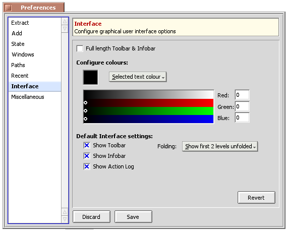

© 2004 Ramshankar
| Preferences |
You can customize Beezer to your preferences and that's what Preferences is all about ;-P
To edit your Preferences, choose either Edit –> Preferences or from WelcomeWindow's Prefs toolbar button. You'll see a window that resembles the one below...

While you have the Preferences window open all other windows in Beezer would be inaccessible.
Preference PanelsRestoring the default options
The Preference window classifies various options into "Panels", such as "Extract", "Add" etc. Extract panel would have options related to extracting of archives, Add with adding of files to the archive and so on.
Each panel has "Revert" button which when clicked undoes any change you made since you opened THAT preference panel.
The "Save" button located at the bottom of the Preference window, saves and applies the currently shown preferences, while "Discard" cancels any changes you made since you opened the window.
Preference Panels
Beezer doesn't provide any internal method to restore the default options for a panel, but you can easily restore the default of any preference panel simply by deleting that panel's settings file. Every panel saves its settings in a seperate file. Deleting that file will make Beezer use the default options for that panel. For example, the add panel will have be saved in settings/add_settings, extract panel in settings/extract_settings.
The menubars are like in any other BeOS application. The menus are explained below
Extract
The extract panel gives you options related to extracting of archives. Note, this extraction includes not just extracting the entire archive but also extracting selected files and drag 'n drop extraction as well.
- Open destination folder after extraction: After extraction of files is complete the folder in which you have extracted will automatically by opened
- Close window after extraction: Closes the archive window after extraction is complete (note: this may lead to quitting of Beezer depending on "When last archive is closed" option in Miscellaneous panel)
- Quit Beezer after extraction: Quits entire Beezer after extraction of an archive is complete
Add
Here you get to configure options related to adding entries to the archive
- Replace files: Specifies what action has to be taken when a file(s) you are adding already exists in the archive. The options are
- Never replace: will never overwrite the file in the archive
- Ask me before replacing: asks you before replacing any file, this is the default action
- Without asking: always replaces files without asking you
- When new file is more recent: Replaces the file in the archive with the file being added if the new file has a more recent modification date
- Confirm when adding more than "n" MB: Whether confirmation is asked when you add more than "n" MB. The default is 80 MB
- Confirm when adding through drag 'n drop: Whether confirmation is asked when you drag 'n drop files to the archive
- Sort after add (n/a for reloading types): Whether the treeview must be sorted after each add operation. For very large archives you may not want to sort after every add operation as it can take time on a slow machine. However, for archive types that reload the entire archive after an add operation this option wouldn't be applicable
State
The state panel allows you to configure state information. State info is info that is 'tagged' along with archives using BeOS file attributes. Because of this, state info would be lost if the archive is moved to a filesystem that doesn't support BeOS attributes (such as vfat, ntfs, ext3 etc.).Please be aware that storing Archiver settings to the archive can increase the archive's size by several KB. Interface state only occupies about 413 bytes.
Also you can manually remove state info from an archive by opening the archive through QuickRes utility and deleting the fields named "bzr:ui" and "bzr:ark".
You can manually save state info into archives of your choice rather than using these automatic options for every archive. For this use Settings –> Save to Archive and (archiver menu) –> Save to Archive options from the main menu.
- Store Automatically: The options under this section determine what state information to automatically store in archives. Interface state saves interface settings such as the size, position, columns, sorting, folding level etc. of the archive window. Archiver settings saves the archiver's settings menu in the archive. By default automatic storing of state info is OFF.
- Restore Automatically: This automatically restores the respective states from the archive when its loaded, by default restoring of state info is ON.
Windows
This panel allows you to configure which windows store their size, position etc.
Paths
The paths panel allows you to specify various default locations (paths) etc.
- Open Path: Specifies the default directory that will be shown in the "Open archive" file requester. For example, if you have most of your archives in one folder, say "/boot/home/Downloads/", you can specify that path here so that you can quickly open archives without 'navigating' to that folder
- Add Path: Specifies the default directory that will be shown in the "Add files to archive" file requester
- Extract Path: Specifies the default extract path. The options for this are:
- Same directory as source (archive) file: Means the folder in which the archive exists will be used as the default extract path
- Use: Allows you to choose anyother default extract location. If you chosen this option and leave/make this empty, then you have not specified any default extract location, as a result Beezer prompts you for the destination folder each time
- Favourite extract paths: Here you can add (using "+" button) any number of favourite extract locations (paths). These locations show up in the extract sub-menus so you can quickly extract to any of your favourite locations. You can remove a favourite path by selecting it and clicking the "-" button
- List more paths (using archive name): When this option is turned on (which it is by default), for each favourite path, the name of the archive added and a new path is generated and shown in the extract sub-menus.
For example, if you have "/boot/Programs" as one favourite path, and you open the archive "MyFiles.zip", having this option on, will produce another favourite path "/boot/Programs/MyFiles" apart from "/boot/Programs". This can be useful when you open archives that don't have a root folder
Recent
The recent panel allows you to configure settings related to recent archives, paths.
- Number of recent archives: Allows you to specify how many recent archives to list in the recent archives menu (10 recent archives are listed by default)
- Show full path in recent archives: If this option is turned on, the full path of the archive would be displayed, otherwise only the name of the archive would be displayed. (by default full paths are turned OFF)
- Number of recent extract paths: Allows you to specify how many recent extract paths to list (by default 5 recent extract paths are listed)
Interface
The interface panel allows you to configure settings related to Beezer's GUI
- Full length Toolbar & Infobar: Allows you to choose if you want the Toolbar and the Infobar to have a full window width look.
- Configure colours: Allows you to configure a few colours used in the interface - you can get back default interface settings by deleting the corresponding settings file
- Selected text colour: The foreground colour of selected files/folders
- Selected background colour: The selection colour
- Default interface settings: Allows you to modify the default archive window settings. These default settings will be used for newly created archives and for archives that do not have interface settings stored with them, and if you have turned OFF the "Restore State" option for all archives!
- Show Toolbars: Toggle Toolbar visibility
- Show Infobar: Toggle Infobar visibility
- Show Action Log: Toggle the Action Log's visibility
- Folding: Allows you to choose the depth of collapsed items. This can sometimes prove very useful.
For most of the time you can safely use the "Show all levels unfolded" option, meaning the entire archive tree (all directories and sub-directories). But for some very very huge archives, using the other settings may save enormous amount of loading time!
Consider the case when all you want to do is open "Huge.zip" (having 20,000+ files) and extract it. Normally using the "Show all levels unfolded" option and loading the huge archive can take several minutes. But now, you should use the "Show all items folded" option and then open the archive. Chances are it will load in an instant, possibly even upto 30 times faster! And now... you are free to start the extract process in few seconds rather than wait for minutes for Beezer to load, add and draw all the items in the archive.
Miscellaneous
Various miscellaneous options
- When last archive is closed: Allows you to choose what action to take when Beezer starts up
- Show welcome window: Shows the welcome window when starting up - this is the default action
- Show create archive panel: Shows the panel for creating archives, choosing "Cancel" will quit Beezer
- Show open archive panel: Shows the panel for opening an existing archive, choosing "Cancel" will quit Beezer
- When last archive is closed: Specify what action should be taken when the last archive window is closed
- Show welcome window: reopens the welcome window
- Quit Beezer: quits Beezer completely
- Show comments (if any) after opening the archive: Self-explanatory (by default it's on)
- Check file types at startup: Each time Beezer starts, checks if Beezer is the preferred application for its supported archive types, by default it is off
- Register file types now: This registers Beezer as the preferred application for its supported archive types. Once you do this, you can turn off the "Check file types at startup" option
- Default archiver: Choose the default archiver while creating archives
| ArchiveWindow | FileType Rules |